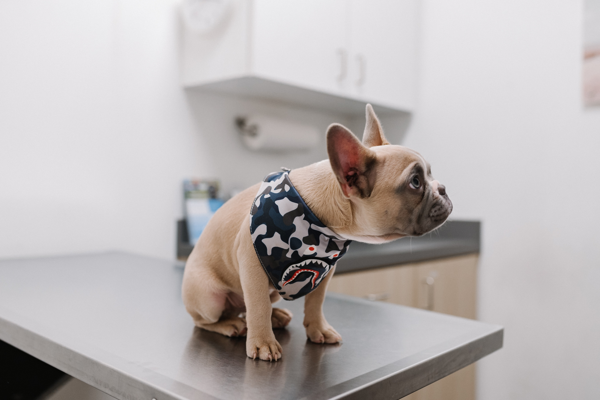

Playground : ofrecemos el cuidado de las mascotas 24/7,juguetes para su entretenimiento, etc.
Grooming: ofrecemos todos los cuidados higiénicos para mascotas: baños, cortes de uñas, peluquería canina, etc.
Acceso a cámaras 24/7 : Contamos con cámaras de seguridad para el acceso de lo clientes en cualquier momento.
Alimentación : Brindamos todos los tiempos de comida: desayuno, refrigerios, almuerzo y cena.
Venta de alimentos : Contamos con productos de las mejores marcas reconocidas en el país para que su mascota tenga la mejor alimentación.
Accesorios : Tenemos gran variedad de accesorios para su mascota y asegurar el mejor entretenimiento y cuidado.
Chequeos: Realizamos exámenes preventivos para asegurar la salud de su mascota.
Operaciones : Contamos con médicos veterinarios cualificados para tratar a sus mascotas en cualquier tipo de emergencia.
Rayos X : Utilizamos tecnología de vanguardia para tener la información más detallada sobre cualquier situación que lo requiera.